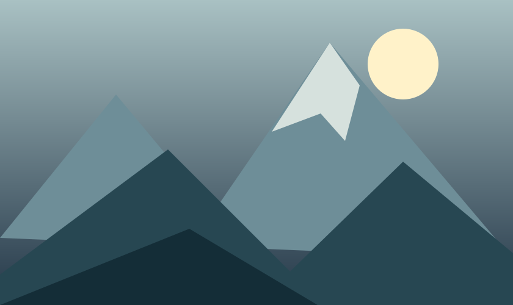
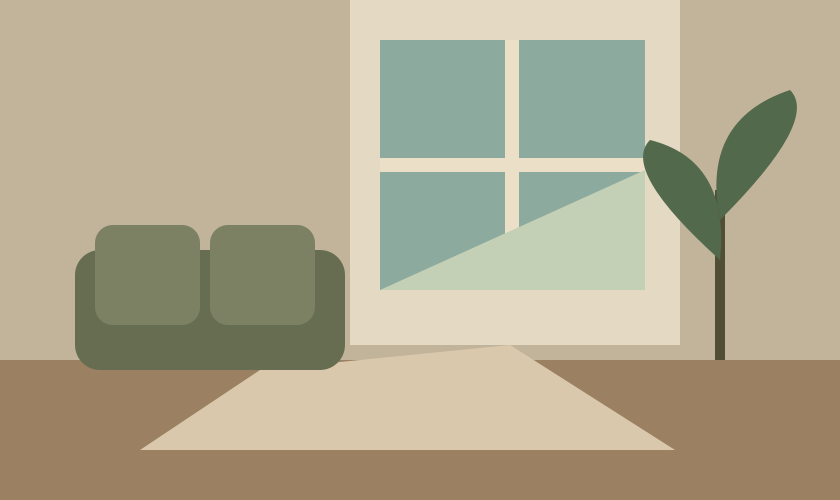
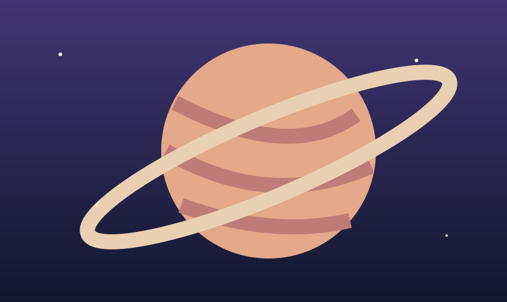
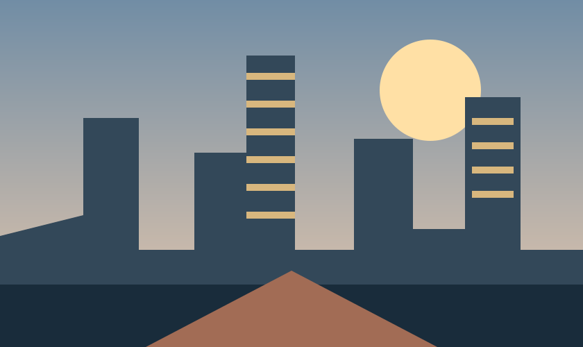
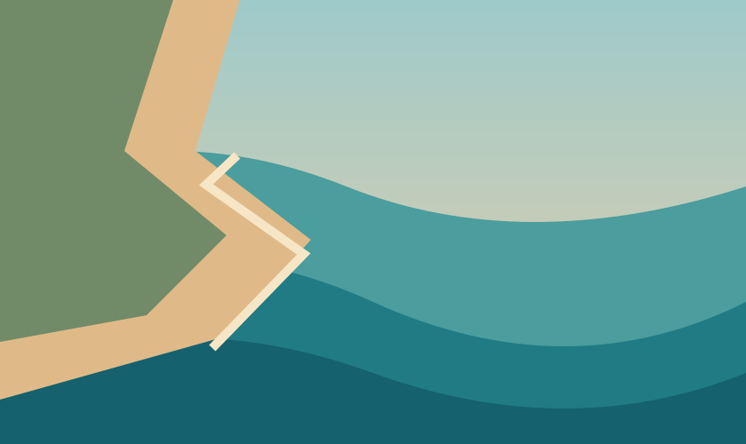
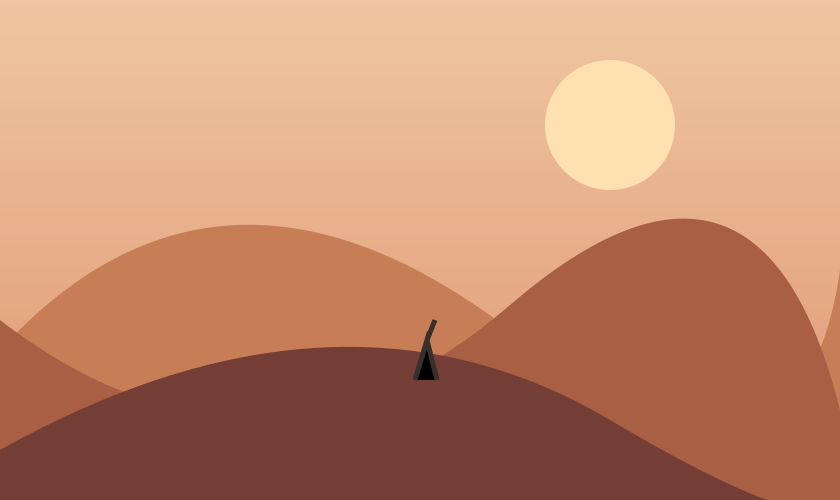

24:18
ЗГ
Туда, где тише. Неделя в горах
За горизонтом ✓
128 тыс. просмотров · 2 дня назад
ВАША ЕЖЕДНЕВНАЯ ПОРЦИЯ ВДОХНОВЕНИЯ
Новые истории, знакомые авторы и немного открытий.

Путешествие в горы, где время идёт иначе.
За горизонтом ✓
128 тыс. просмотров · 2 дня назад

12:06Форма и свет ✓
42 тыс. просмотров · 1 день назад

18:42Космос рядом ✓
306 тыс. просмотров · 3 дня назад

08:35Другой ракурс ✓
67 тыс. просмотров · 5 часов назад

32:10За горизонтом ✓
91 тыс. просмотров · 4 дня назад

16:54Вне маршрута ✓
54 тыс. просмотров · 1 неделю назад